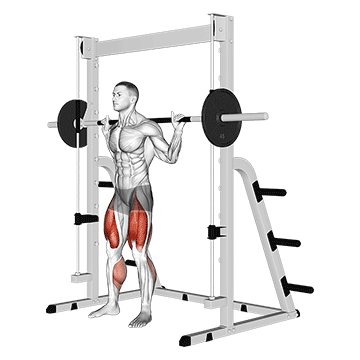
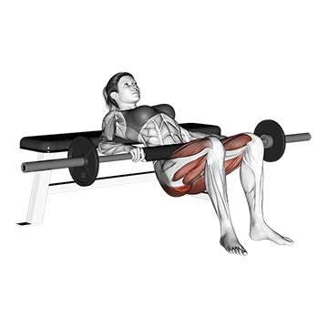

Agachamento com barra guiada
Execução: Posicione a barra nos ombros e mantenha os pés afastados na largura dos ombros. Agache como se fosse sentar, mantendo a coluna reta e os joelhos alinhados com os pés.
Cuidados: Não deixe os joelhos ultrapassarem a linha dos pés, e mantenha o abdômen contraído para proteger a lombar.

Leg Press 45
Execução: Sente-se na máquina e empurre a plataforma com os pés afastados na largura dos ombros. Flexione os joelhos até formar um ângulo de 90 graus e retorne à posição inicial.
Cuidados: Evite estender completamente as pernas no final do movimento para proteger os joelhos.

Pés mais altos na plataforma: Colocar os pés mais altos foca mais nos glúteos e isquiotibiais (posterior da coxa).
Pés mais baixos na plataforma: Isso aumenta o foco nos quadríceps (parte frontal das coxas).
Pés mais afastados: Trabalha mais os adutores (parte interna das coxas).
Pés mais juntos: Foca mais nos quadríceps.
Afundo com halteres ou barra guiada
Execução: Com um halter em cada mão, dê um passo à frente, flexionando ambos os joelhos até o joelho de trás quase tocar o chão. Suba usando a perna da frente.
Cuidados: Mantenha o tronco ereto e o joelho da frente alinhado com o pé, evitando inclinações.
Elevação pélvica
Execução: Apoie a parte superior das costas em um banco, mantenha os pés no chão e eleve o quadril, apertando os glúteos no topo.
Cuidados: Mantenha o pescoço neutro e evite arqueamento excessivo da coluna.

Cadeira abdutora
Execução: Sente-se na máquina e empurre as pernas para fora, trabalhando os músculos laterais do quadril e glúteos.
Cuidados: Mantenha o movimento controlado para evitar forçar articulações.